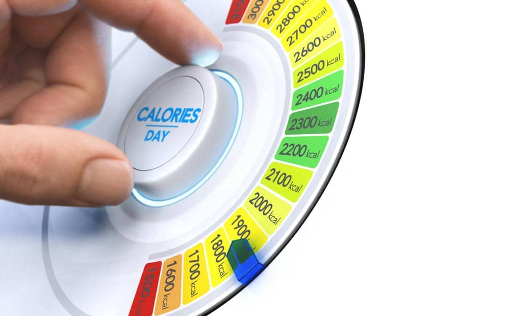

What Are Calories?
A calorie is a unit that measures energy.
Calories are usually used to measure the energy content of foods and beverages.
To lose weight, you need to eat fewer calories than your body burns each day.
How Many Calories You Need Per Day?

Depending on whether you want to maintain, lose or gain weight, as well as few other factors
like your gender, age, height, current weight and activity level.
Disclaimer...
If you're a competitive athlete, have a metabolic disease, such as diabetes, and pregnant or breast-feeding,
the calorie calculator may overestimate or underestimate your actual calorie needs.